> ITCH.IO NEWS
-
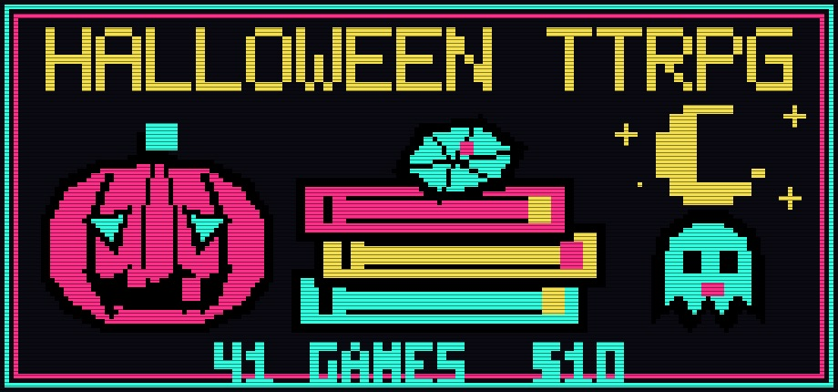
[ BUNDLE ] Two Co-op Bundles Opened on Monday: 29 Games and Zines for a Top Surgery, and 24 RPG Icon Packs for $19.99. Behind Them, a 41-Game Halloween TTRPG Bundle Has Six Weeks to Run.The co-op bundles page turned over twice on Monday, September 14, and the two new listings are a fair sample of what the system is used for. At 08:00 UTC Danny's Top Surgery Bundle went live: 29 items for $10 against a $193 sticker, a 94% cut, hosted by a.c.d with twelve other creators — a. fell, atticus hart, Caro Asercion, Constellation, Lady Tabletop, Marn S., Mousewife Games, R.E.M. Speedwagon, Sasha Reneau, Susan Alexandrite and Theodore Monk — and it runs to November 20. The page is plain about why: "My name is Danny and I'm raising funds to pay for my top surgery scheduled for January 2027. Due to my weight and anti-trans regulations in Florida (where I live), I've been rejected by three different surgeons, but have finally found a surgeon in California who is willing to do the procedure" — out of state, not on insurance, "a huge cost." The contents are the small-press tabletop scene doing a favour for one of its own: Caro Asercion's The Long Shift, close encounters at an interstellar truck stop; Sasha Reneau's tarot-campaign companion Spindlewheel Forever and hard-boiled oracle deck Spindlenoir; Theodore Monk's MILF Murder, a mystery for nine players and a host; Mousewife Games' Yuri Chess; Lady Tabletop's solo journaling games Lost Luggage and Thaumaturge, P.I.; two Interstitial playbooks from R.E.M. Speedwagon; Susan Alexandrite's photography book Queer People and Their Hobbies; and a.c.d's own zines, owl/dyke, Flying while FAT and A.C.D'S GUIDE TO PUKING IN PUBLIC among them. Because it is a fixed-price bundle with no goal, itch.io shows no running total; the GoFundMe linked from the page does. Eight hours later, at 16:43 UTC, the Ultimate RPG Icons Bundle — 24 Packs opened at the opposite end of the market: Antahonist's 19 packs of pixel-art RPG icons — skills, classes, quests, food, cursors, status effects, equipment slots, damage types — plus mmorwynn's five packs of painted item, weapon, spell and portrait icons, 24 packs for $19.99 against $83.29, 75% off, with a $999.99 goal and, an hour in, $0.00 on the counter. It runs two weeks, to September 28. Antahonist's profile lists nine bundles — Pixel RPG, Animal Friends, Complete UI & Icons, Characters, Chibi Collection, Medieval Icons, Animated Characters, VTT Tokens and now this — which is the co-op system used as a permanent storefront rather than a sale. Both new bundles sit beneath the season's biggest tabletop listing, which has been up since September 1 and closes at midnight UTC on Halloween: the Hot Ghoul Halloween TTRPG Bundle, hosted by gothHoblin ("overly attached to fictional characters since '82") with 29 other creators, 41 games and supplements for $10 against roughly $175, also a 94% cut. It mixes standalone games with material for 5e, Old-School Essentials, Candela Obscura and Pathfinder 2E: gothHoblin's own Thus Spake Agathis, a folk-horror incursion for Trophy Dark, and The Haunting of Myrtle Cottage for 5e level 2; Table Cat Games' Monster Truckers: Long Haul into the Worstlands; Fey Earth's Candela Obscura Web of Darkness; Monkeyslunch's Grim Accoutrements; Ennio's Who's Hoo?, "a game of deception where one player is possessed by an owl"; Basil Wright's You Will Pet the Cat!; Dorian Blackwood's cursed-camera supplement Aperture; Volvodja Press's OSR monster manual Spirit of the Dungeon; Kelly Whyte's The Accursed 5e class; and Thogreer's Cursed Confections, "a Caltrop Core game of delicious fright." It, too, is fixed-price with no goal, so no total. The fourth fundraiser on the page is the one that is free: Beth and Angel Make Games' Unhoused Fundraising Bundle, 44 pay-what-you-want games and zines, running to October 5, from a couple who write that "due to some surprise transphobia in the home we lived in, we are currently unhoused" and are in a hotel looking for an apartment and jobs. Three of the four are mutual aid; the fourth is an asset shop. That is the itch.io bundle page in September 2026. Source: Danny's Top Surgery Bundle on itch.io · GoFundMe · Ultimate RPG Icons Bundle · Antahonist · mmorwynn · Hot Ghoul Halloween TTRPG Bundle · gothHoblin · Unhoused Fundraising Bundle · itch.io co-op bundles
-
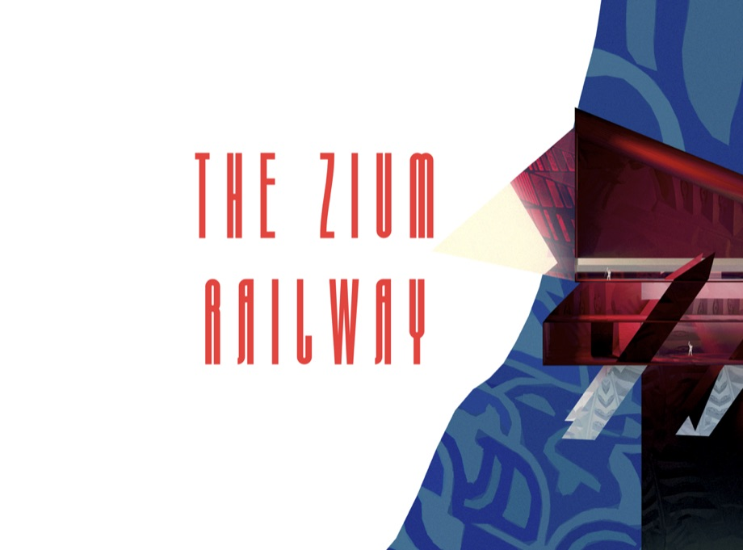
[ RELEASE ] A Free Art Gallery You Ride a Train Through. The Zium Society's Fifth Exhibition Is Out, and Every Donation Is Split Between the Artists."The Zium Railway is out today! Available as a free download on itch," Jacob Potterfield posted on Sunday afternoon, "if you're interested in exploring the video game medium as a immense canvas for art experimentation." A zium — the word is the collective's own, "kind of like a zine, but the museum video game version" — is a virtual gallery game in which artists from around the world each get a room, and The Zium Society has been making them on itch.io since The Zium Museum, through The Zium Garden, The Zium Gallery and last year's The Zium Exposition, the last of which sits at 5.0 stars from 34 ratings. The Zium Railway is the fifth mainline exhibition and, counting this spring's literary journal The Zium Digest, the sixth collaborative project. The change this time is the building. Instead of a museum, curator Michael Berto handed the whole world to Potterfield — the artist behind Ramblemoor, who built the introductory level of the Exposition — and the result is a hand-crafted open world called Lyptch, "the picturesque Valley of the Underground Mountain," explorable on foot or by the Z Train, with a station for each artist. Every station holds a Process Gallery, the series' signature feature, of sketches, early screenshots and background notes, and then an entrance into the artist's actual scene. The artists are Ada Null, Charlotte Madelon, Christopher Ferris, Farfama, John Flannelly & Virtual Neighbors, Julian Palacios, Zilasaule, Pippin Barr — who was in the contributor list of the very first Zium Museum — plus Potterfield and Berto themselves, a deliberately small pool against the 20, 30 or 40-plus artists of the tentpole exhibits. Berto's release-day letter explains why: it let him try something he had wanted to for a while, revenue share. All donations to the itch.io page during the first year are split equally between the featured artists, Berto's own share being The Zium's share, "so any donation you make to The Zium goes directly to the artists that worked on it." Donors of $5 or more also get A Beautiful Moment Will Occur, a feature-length "software film" by Berto — "a game you watch but don't play" — with its soundtrack on Bandcamp. The letter is unusually candid on one more point. Did the project use AI? "Not really, though the answer is, categorically; yes": Berto used it for programming and code assistance, accepted no AI artworks, and says none of the artists used it in their work — "In general, on the AI issue … I am Zwitzerland." The idea came from Farfama, who suggested a Zium "that was like a railway, and that each artist could have their own station," and the build ran from roughly mid-2025 on a "take as long as everyone needs" schedule. Windows only, name your own price, and the page is still marked "In development"; the first rating in is five stars. Source: The Zium Railway on itch.io · A Letter from The Curator · Jacob Potterfield on Bluesky · The Zium Society on itch.io · The Zium Exposition · Soundtrack on Bandcamp
-
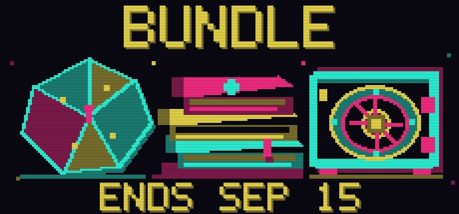
[ BUNDLE ] A Pay-What-You-Want Bundle for Braille Dice Closes Today at 238% of Its Goal. Two Hours Later, a 270-Item Solo TTRPG Vault Shuts Too.Two of the co-op bundles on itch.io's front page expire on Tuesday afternoon, and they are opposite ends of the tabletop market. The Indie charity bundle for Accessibility in TTRPGs — hosted by jobclassttrpg with 35 creators, 45 items, pay what you want against a roughly $100 sticker — closes at 13:46 UTC on September 15 with $2,388.29 raised from 383 contributors, 238% of a $1,000 goal, at an average of $6.23 and a top gift of $55 — six more backers and $32 in its final day. It has been running since the end of June, when its organiser, posting as Forthesect, announced it on EN World; the goal fell in two weeks. Every dollar goes to the DOTS RPG Project, the nonprofit that produced the first factory-made RPG dice with braille-only faces, runs the accessibility lounge at PAX, and is writing alt text for RPG art and guides to making PDFs readable for players with visual disabilities. The bundle itself grew out of a Charity Jam for Accessibility in Tabletop RPGs that DOTS and the r/myrpg book club ran from March 23 to May 23, and the host says they read every submission: the range is from a 24-word micro-RPG to 200-plus-page core books such as Chains of Gaelia, the Orwellian Oceania 2084 and the card-deck classes of Fated Seas, by way of a Fate accessibility toolkit, a random road generator for chase scenes called Clutch Decisions, and Pillars What Remains, in which a whole party plays aspects of a single courier. It is free if you want it free — the page says so twice — which is what makes the $6.24 average a real number. Two hours after it closes, at 15:38 UTC, The Strange Vault goes too: 270 items for $75, against a listed $1,542, a 95% cut, hosted by TheMetalCarrotDev with Robot Rabbits in the Library. TheMetalCarrotDev describes themself as an "artist and visual-focused game designer," and the vault is a single prolific solo catalogue — Girl of Confrontation, Celestial Under The Retro Skies, We Won't Survive Pickles, There's a Cosmic Horror on the Terrace, You Too Can Be An Early 1990's Show and some 265 more — sold as one lot, no goal and no raised figure because it is a fixed-price sale. Behind them the week's other tabletop closings line up: kumada1's Beginner Friendly Pay What You Want TTRPGs, 38 items from 24 creators with profits split equally between the designers, is at $259 of a $500 goal from 77 backers and ends September 19; the Spooktober Visual Novel Jam Asset Bundle ends Wednesday, and two more tabletop bundles — one for a top surgery, one for Halloween — opened on Monday (above). The braille-dice bundle also has a precedent on the platform: TTRPGs for Accessible Gaming, a 136-creator charity bundle for the same cause hosted by jesthehuman, the organiser of the Games for Scholarships bundle below. Source: Indie charity bundle for Accessibility in TTRPGs on itch.io · EN World announcement · Charity jam · The Strange Vault · TheMetalCarrotDev · Beginner Friendly PWYW TTRPGs · TTRPGs for Accessible Gaming · itch.io co-op bundles
-
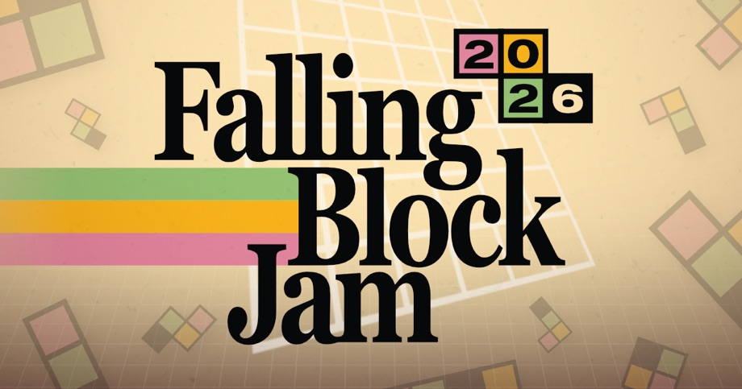
[ GAME JAM ] Last Year 226 Falling-Block Games. This Friday the Mixolumia Developer Runs It Again — No Ranking, No AI, "for Love of the Game.""Falling Block Jam starts next weekend, who's in?" is the kind of post that has been going round Bluesky since Sunday, and the page it points to reads 175 joined on Tuesday morning, eight more than a day earlier. Falling Block Jam 2026 is hosted by davemakes — the developer of Mixolumia, who entered PICO-1K two weeks ago with the 999-byte dodge1k and has spent the summer making a Pico-8-for-total-beginners video series — and its brief is one sentence: "Falling Block Jam celebrates the combination of blocks and gravity in video games. Think Tetris, Puyo Puyo, Panel de Pon, Dr. Mario, and Lumines." It runs September 18 to 28. The first edition, last September, ran nine days and finished with 226 entries and a 135-topic community board under the optional vibe "Analog Memory," and the 2026 rules are that jam's rules with a year of moderation added. Rule one is the whole point: "Games must have block-like things that fall," where the blocks "might be something like jellies, or fruit, or meat, or garbage, or little guys" — "Push the boundaries, but don't disregard them." Games must be made during the jam, must say "Made during Falling Block Jam 2026" on the project page ("This just helps me weed out spam"), downloadable entries must have screenshots, and there is an AI clause written in the host's voice: "Games obviously using AI art or audio will be removed. LLM generated code may fly under the radar, but I strongly encourage you to use your noggin instead." The rest is the itch.io jam-runner's field guide — no games that need Python installed to run, nothing submitted to more than two other jams at once, no one person spamming multiple entries, and "Projects that are just a mysterious APK file will be removed. It's suspicious, I'm just sayin!" There is no voting and no ranking: "We are doing this for love of the game." An optional theme lands when the clock starts. The community board so far is four threads, three of them people looking for teams — a musician offering to score anyone's game, a 2D artist and writer who "can mangle" some code — and a Discord set up by an entrant because the jam has none of its own. It sits alongside the other September itch.io jams already in progress: GBJAM 14 closes on the 21st, and PICO-1K, where davemakes' entry lives, is up to 93 joined and 34 entries with two and a half weeks left. Source: Falling Block Jam 2026 on itch.io · Falling Block Jam 2025, 226 entries · Community board · davemakes' newsletter · "Who's in?" on Bluesky · dodge1k · PICO-1K Jam 2026
-
![Four pixel-art asset pack covers in a grid — top left the TINY THRONES logo in chunky teal-grey letters above a small castle town with a blue flag under a pale moon, top right a dark grey TINY CLANS SERIES card reading Goblins and Humans with two rows of tiny green goblin and armoured human sprites and the credit by Zneeke, bottom left a black TINY SPELLS Tome of Fire sheet of small orange flame and fireball animation frames, bottom right a second TINY THRONES cover with a goblin camp of tents, a skull banner and a wooden watchtower](assets/img/tiny-series-bundle.jpg) [ BUNDLE ]
Three Pixel Artists Put 21 "Tiny" Asset Packs in One $29.99 Bundle. It's Their Fourth Run at It, and the First to Last Seven Weeks.
[ BUNDLE ]
Three Pixel Artists Put 21 "Tiny" Asset Packs in One $29.99 Bundle. It's Their Fourth Run at It, and the First to Last Seven Weeks.
The TINY THRONES-CLANS-SPELLS Series Bundle went live on itch.io at 14:18 UTC on Thursday, September 10, and is the kind of listing the bundles page exists for: three independent pixel artists — Penusbmic, zneeke and BigWander — selling the complete run of their three interlocking series together, hosted by Penusbmic, for $29.99 against an $86 sticker total, a 65% saving, DRM-free. The three series are built to be used with each other. Penusbmic's Tiny Thrones supplies the world: a Starter Pack of kingdom buildings, a Goblin Camp, a Parallax BG Pack, and the newest, an Ancient Elvish City of 16×16 tiles with seven animated buildings, an animated flag and the Aseprite files ($5 on its own, tagged No AI, with "No generative AI was used" on the page). zneeke's Tiny Clans supplies the people — nine numbered packs plus a bonus pack of tiny animated characters, starting with humans and goblins in Pack 1, which is pay-what-you-want and rated 5.0 from 4, and running through ratfolk and lizardkin in Pack 4. BigWander's Tiny Spells supplies the effects: Tomes of Fire, Thunder, Nature, Water and Blood, a Frozen Tome, and Tiny Tomes – Animated, spellbooks at 8×8 and 16×16 — Tome of Fire being 11 fire spells and effects for platformers at $5 alone. The bundle's own history is what makes this one notable. The first collaboration, Penusbmic × zneeke only, ran November 28 to December 5 last year at three items for $13.99. BigWander joined for the January 2–9 run, 11 items for $24.99. The February 13–20 run had 20 items for $39.99, which the page itself called "Save 2%" against the itch minimums and 50% against the $81 sticker. This one adds a 21st item — Tiny Clans Pack 9 — drops the price by ten dollars, and instead of a single week runs 51 days, to 14:18 UTC on October 31. The packs' individual pages have all switched to the "Get this asset pack and 20 more for $29.99" strip that co-op bundles put on member listings. The same weekend brought a bundle at the other end of the market: the 35000+ Items Massive Bundle, hosted by Coffee Beans Studio with RehanDev, 90 icon, UI, vehicle, food and furniture packs for $14.60, live from 08:04 UTC Saturday for exactly four days, to September 16. Between them they show the two ways itch.io's co-op bundle system gets used by asset makers: a small, long, curated series sale, and a very large, very short volume one. Source: TINY THRONES-CLANS-SPELLS Series Bundle on itch.io · February run · January run · First collab, Nov 2025 · Ancient Elvish City · Tiny Clans: Pack 1 · Tiny Spells: Tome Of Fire · 35000+ Items Massive Bundle · itch.io bundles page
-
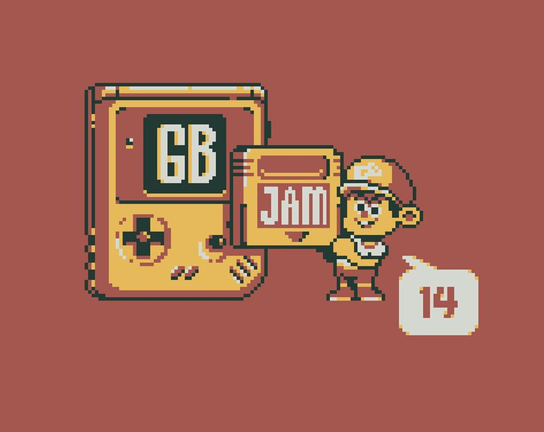
[ GAME JAM ] 4,387 People Have Joined a Game Boy Jam Whose Theme Is "Old Gold." Ten Days, Four Colours, No AI."GBJAM 14 has started, and the theme is OLD GOLD!" Polyducks posted on Friday at 14:05 UTC, three hours after the clock began. GBJAM is the itch.io jam about making Game Boy–inspired games — fourteenth edition, hosted by Polyducks with chasehunter, DL, poltergasm, timconceivable, tatltuae, Traslo, arknano and batfeula — and its format is fixed: ten days, two weekends, September 11 at 11:00 UTC to September 21 at 11:00 UTC, with rating running to October 5. The page reads 4,387 joined as of Tuesday morning, eight more than a day earlier as sign-ups slow with six days left, which is already a bigger sign-up than the 173 finished entries and 3,225 ratings GBJAM 13 ended with last September under the theme "Unluckiness." The secondary theme this year is written the way the hosts like to write them, as a prompt rather than a rule: "There's something buried waiting to be discovered — perhaps in an antique shop, under the sands of a distant island, behind a waterfall or protected by a dragon. Not all that shines is gold, but not all gold shines — maybe the old gold is a parent's old diary, the friends we met before and forgot, the house we grew up in and revisited, or the toys we played with." The actual rules are the hardware's: 160 by 144 pixels, scaled only with square pixels and the right aspect ratio; a maximum of four colours on screen at any time ("Black is a color. … Five is right out."); the Game Boy's control count — D-pad, A, B, Select, Start; all music, code and art made during the jam, a pre-existing font being the one exception. New in the written rules is a flat ban — "AI art, AI code generation and AI tools are not allowed to be used in this jam" — with the FAQ explaining the reasoning at some length: "AI generated materials are often very average in terms of creative freshness," and "If you need assistance, please team up with a human with a matching skillset." Beyond colours and resolution the game does not need to run on a Game Boy or sound like one. Entries are rated by other entrants only, three random games before you may pick your own, on six criteria: Gameplay, Graphics, Soundtrack/SFX, Gameboy Soul, Quirkiness and Secondary Theme Interpretation. The community board — 217 topics, most of them from the last day — is doing what it does at the start of every GBJAM: "looking for a composer," "artist looking for a team," and the perennial four-colour edge case ("if I make a game with lights only in certain parts, is the black of the shadows one of the four colours?" — yes). The first finished entry to be announced on the itch.io forums, Shellsharker's Old Gold Lights, is a browser lights-out puzzle at 160×144 in four colours, posted within the first day. Submissions are hidden until the jam closes; the count appears on the 21st. Source: GBJAM 14 on itch.io · Polyducks on Bluesky · Community board · GBJAM 13 results · Old Gold Lights announcement
-
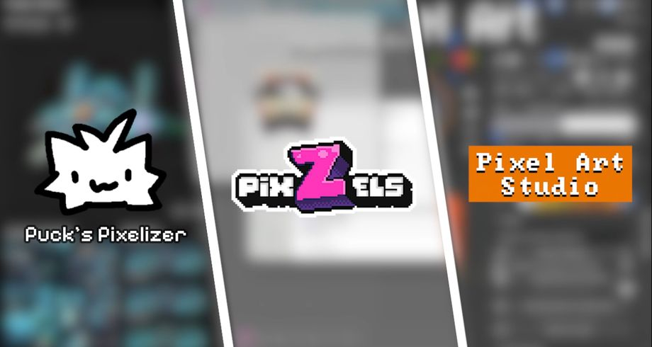
[ BUNDLE ] Three 3D Pixel Art Tools, Three Creators, One $29.90 Bundle — 53% Off Until September 26"For the first time ever, I teamed up with TWO other tool creators to make the best 3D PIXEL ART TOOL SALE EVER on itchio," Puck posted on Friday afternoon, and the bundle page went live the same hour. The 3D Pixel Art Tools Bundle, hosted by Alfred Baudisch (Pardall), collects three paid tools that each attack the same problem — getting pixel art out of, or onto, a 3D model — from a different side, for $29.90 against a regular $64.89, a 53% saving, DRM-free, and it runs to September 26 according to Puck's reply to a buyer asking about an expiry. Pixel Art Studio ($29.90, Baudisch's Blender add-on, published just two weeks ago and rated 5.0 from 11) draws and paints pixel art directly onto a model in Blender's 3D viewport or in 2D in the image editor, with palettes, layers, bucket fill, gradients, pressure sensitivity and per-face pixel density so a whole mesh can share a uniform pixel size. PixZels ($15, by pixel_Salvaje, rated 4.9 from 65, runs in the browser) goes the other way: it turns 2D pixel art into 3D models and multi-angle sprite sheets — 8 or 16 directions, isometric or top-down, RPG Maker sheets, animated GIF, OBJ export — "in seconds." Puck's Pixelizer ($19.99, Windows, macOS and Linux, rated 4.9 from 35) takes any high- or low-poly model with textures up to 2K and pixelates it live, with 131 ready palettes, dithering and brightness, blur, saturation and tint sliders; its page carries the honest note that Puck hasn't found a way to distribute the tool's Steam keys automatically and is handing them out over Discord until a batch of "over 100 keys" arrives from Valve. What makes the bundle notable is less the discount than the shape of it: itch.io's co-op bundles are almost always games, or asset packs assembled by a community; three independent tool developers pooling their storefronts is the platform's bundle system being used as a joint sale, which is precisely what the docs say it is for. Buy it and you get all three added to your library individually; the bundle price is only shown on the bundle page and on each tool's own page under "Get this tool and 2 more." Source: 3D Pixel Art Tools Bundle on itch.io · Puck on Bluesky · Pixel Art Studio · PixZels · Puck's Pixelizer
-
 [ GAME JAM ]
3,509 People Signed Up to Make a Halloween Visual Novel in a Month. The Jam's Own Asset Bundle Hit Its Goal With a Day to Spare.
[ GAME JAM ]
3,509 People Signed Up to Make a Halloween Visual Novel in a Month. The Jam's Own Asset Bundle Hit Its Goal With a Day to Spare.
The biggest visual novel jam on itch.io runs a month early on purpose. The Spooktober Visual Novel Jam, now in its eighth year and hosted by Stella of MakeVisualNovels for the Visual Novel Developer Network — the DevTalk Discord community that says it helps over 500 visual novels get made a year — opened for submissions on September 1 and takes them until 04:00 UTC on October 1, so that the finished games are on itch.io for the whole of October, when the organisers invite "itch users, streamers and visual novel lovers" to play and vote on them. Two weeks in, the page reads 3,509 joined and 86 entries — four more finished games on Monday, after ten over the weekend — with judging running to October 28. The theme is loose — a horror visual novel, a story set on the holiday, monsters, ghosts, costumes, candy, or a creepypasta version of your own earlier work — and the rules are strict about time: concept art, outlines and a logline may exist beforehand, but nothing except the logline can go into the game as-is. What makes it unusual for an itch.io jam is that it is a competition with money on the table. The ranked prizes are $1,000, $750 and $500 plus a $100 Vograce coupon each, and to be eligible a team has to buy a judge pass — the organisers' stated way of keeping the number of entries the judge panel must play to something they can actually finish — and judge pass sales stop on September 15. Around that sit the open prizes anyone can win: $100 each for best voice actor, cinematography and original music, a $300 Vograce coupon for character design, $500 for the best chat-sim, $500 each for the best entry built in Naninovel and in Light.VN, and a $300 University League prize for students at six participating campuses. The same September 15 deadline applies to the Spooktober Visual Novel Jam Asset Bundle, a $30 pack of 72 items from 41 creators — horror music, Ren'Py UI kits and transitions, sprite packs, backgrounds, a dating-sim framework — pitched at roughly $120 of value, with proceeds split between the contributors and the community's running costs, the VNDev Wiki and the University League prize among them. After sitting at $1,300 from 42 contributors for three days, it crossed its goal on the judge-pass deadline: $1,720 of $1,500, 114%, from 56 contributors at an average of $30.71 and a top payment of $50 — fourteen buyers and $420 in a single day, which is to say almost everyone paid the minimum and a few paid more, and the last-call reminder on the jam page worked. The bundle closes at 04:00 UTC on September 16. A large share of the horror visual novels that fill itch.io every October come out of this jam, and the entries page over the next three weeks is the place to watch them arrive. Source: Spooktober 8th Annual Visual Novel Jam on itch.io · Entries · Asset bundle
-
 [ BUNDLE ]
Games for Scholarships Has Its Best Day in Two Weeks, $146 — Six Days Left, $788 a Day Needed
[ BUNDLE ]
Games for Scholarships Has Its Best Day in Two Weeks, $146 — Six Days Left, $788 a Day Needed
Organizer jesthehuman's back-to-school bundle collects everything submitted to the Games for Scholarships jam — 365 entries across video games, browser games and tabletop RPGs, made between July 13 and August 10 under a jam policy that barred discriminatory and AI-generated material. The resulting DRM-free package is 324 items from 159 creators for a $10 minimum, against a regular value of roughly $681. Every dollar goes to Games for Change, funding scholarships for underserved youth in the G4C Student Challenge, the nonprofit's global design competition for students aged 10 to 25. A week after the original $10,000 target fell and the organiser doubled the post to $20,000, the page reads $15,269.57 raised, 76% funded, from 1,268 contributors averaging $12.04 each with a $75 top contribution. Monday added $146 and thirteen backers — the best day since the start of the month, after a week of $50, $55, $60 and $80 days — which nudged the percentage over a line for the first time in nine days but does not change the shape: the total has been parked in the low $15,000s since September 6, a long way from the $600-a-day first week, when the $704 bump on September 1 marked the last of the back-to-school traffic. The campaign closes 06:59 UTC on September 21 — six days — with $4,730 still to find, or roughly $788 a day against a run rate around a fifth of that even on a good day. The original goal is long since banked; what is at stake now is only the doubled one, and on current form it will finish around $15,700 unless something outside the bundle page moves it. Source: itch.io bundle page · Jam page
> INDIE SCENE
-
[ OPEN SOURCE ]
A Solo Developer Put His Whole Game in the Public Domain. Worlds Upon the Wind's Code, Art and Godot Project Are Now CC0 — Everything Except the Audio.
"Worlds Upon The Wind is built using the open source Godot engine and makes heavy use of historical public domain art. Now it's time to give back to the community." That is the whole justification in Max Shawabkeh's Steam post of September 12, and what follows it is rarer than the phrasing suggests: the source code and all of the assets of a commercial game that is still on sale — $9.99 on Steam, Very Positive at 238 of 242 reviews — released under CC0, the public-domain dedication, "so other indie developers can freely study and reuse any of the code or art in their projects." GamingOnLinux picked it up on Monday, with the accurate footnote that CC0 is not an OSI-approved open-source licence but something looser, a waiver of copyright altogether, which means the material can go into commercial projects with no attribution. The GitHub repository, max99x/wutw-public, at 172 stars and 17 forks by Tuesday morning, holds the complete Godot 4.7 project: the GDScript game code, a C++ GDExtension for map generation, the source art as PSD and SVG files, the build automation and the Steam integration. "The primary goal of this repository," the README says, "is to provide a complete, production-tested reference for other indie developers." The one exclusion is everything you hear: the music and sound effects are third-party-licensed and stay out, so a build from source runs silent apart from the voiced cutscenes. Updates keep flowing both ways — the v1.3.2 patch that went to Steam on September 14, with a relic-removal skill and a fix for a missing Kuniyoshi original, landed in the repository the same day, and the developer says all future updates will be mirrored. The game itself explains the impulse. Worlds Upon the Wind, released July 23 for Windows, Linux and macOS, is a peaceful roguelite deckbuilder in which the cards are glyphs of seven essences — Stability, Change, Life, Craft, Spirit, Radiance, Connection — slotted into floating world shards to found settlements, with a 20-hour campaign that keeps adding systems (surveys, capital cities, landmarks, card crafting, restless spirits, 15 animal companions, side quests), 350-plus glyphs and 100-plus relics, and its entire visual world is assembled from real woodblock prints and painted scrolls spanning centuries of Japanese art, each with an in-game art wiki entry showing the unedited original and its history; there are optional kanji-drawing minigames for the glyphs. Shawabkeh, based in Portland, is a ten-year industry veteran — Riot Games and Stonehearth, The Alekon Company, Jam and Tea — and this is his first solo release. Studios have released engine source before and kept the art; the unusual part here is that the art was already public domain, so the developer had nothing to withhold and chose to withhold nothing. Source: GamingOnLinux · Steam announcement, Sept 12 · GitHub: max99x/wutw-public · Steam · Launch press release, July 23 · LadiesGamers review
-
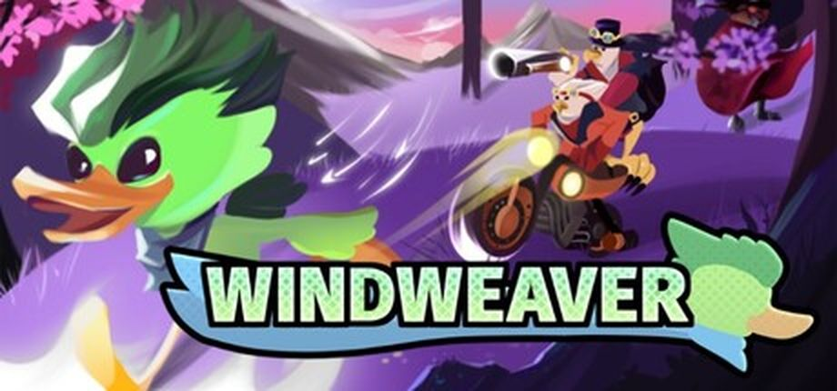
[ CROWDFUNDING ] A Sonic Fan Expo Opens for a Week. A South Australian Studio Is Using It to Launch a Kickstarter.SAGE — the Sonic Amateur Games Expo, the online showcase Sonic Fan Games HQ has run since the early 2000s for fan games, mods and, increasingly, original indie platformers — opened its 2026 edition on Friday and runs to September 18. Greenfeather Studios, a small team in Adelaide, timed both halves of its launch to the opening day: a free demo of Windweaver, on Steam and through the SAGE showcase, and a Kickstarter asking for AU$22,000 (about US$15,700) that closes October 11. Kicktraq had it at AU$2,638 from 27 backers — 12% — after the first day, an average pledge of AU$98, and AU$3,718, 17%, by Tuesday, four days in. The game is a high-speed 3D platformer with a resource where most of the genre has physics: Jonathan, a bird of an order called Windweavers who can no longer fly, moves by spending and recovering wind energy — Dash burns it to accelerate across ground, walls or open air; Dive corrects direction downward; FallCharge deliberately recovers energy while descending; Wallrun handles the corridors — so staying fast is a management loop rather than a slope-reading reward, with the Steam page's stated design goal being "never, ever losing your momentum." On top sit craftable Pins that change movement parameters instead of adding abilities — Slipstream for speed, Bounce for airtime, Speed to compound velocity — upgraded at a Blacksmith. Lead programmer Landon Gollop has already cast the voice roles after an open audition; the story has Jonathan running for home while hunted by the Eagles, a militarised faction. Tech Times, which broke down the campaign, points out the studio debuted at last year's SAGE with a Cherry Valley demo and is treating the expo's eight-day window as a conversion funnel: try the demo, back the game before the showcase closes. Windows only, English only, no date. Source: Tech Times · Kickstarter · Kicktraq · Steam · Demo · SAGE at Sonic Fan Games HQ
-
 [ CROWDFUNDING ]
Double Fine's Backers Picked Four Prototypes. The Fortnight Started Yesterday.
[ CROWDFUNDING ]
Double Fine's Backers Picked Four Prototypes. The Fortnight Started Yesterday.
The vote is in and the jam is on. Double Fine left Microsoft this summer, cut 23 staff in July, and went straight back to the thing that funded Broken Age in 2012: a Kickstarter, launched August 31 with documentary partners 2 Player Productions, not for a game but for Amnesia Fortnight, the studio's old internal ritual in which everyone drops what they're doing and builds prototypes for two weeks. Twenty-six staff pitches went up as 30-second videos, and 5,852 backers who had put in $496,159 against a $400,000 goal by the end of the first week were asked to pick a top three. Voting closed on September 6, the last day of PAX West, and the studio's post the same evening names the four that made it: Architactics, pitched by Asif Siddiky; Bard Crawl, by Jared Mills; Plot Armor, by Lauren Scott; and Uprise, by Jolie Menzel. No vote counts were published. Development started Wednesday, September 9, and runs to the 23rd, with the studio streaming every day and sitting the four leads down on camera so backers can watch the prototypes take shape — because there is a second vote at the end, and it is the one that matters. Demos go out to backers, one of the four gets extra polish time, and it ships as a small game under the studio's new sub-label, Double Fine Action Labs, in the same slot as the recently announced Thank You Bus Driver. The Kickstarter itself stays open until September 30, and Kicktraq had it at $540,859 on Tuesday, 135% of the goal. The precedent is what makes the format credible: Costume Quest, Stacking and Iron Brigade all started life as Amnesia Fortnight prototypes. The stretch goal is the joke it sounds like — Brütal Legend 2 at $100 million — but the underlying move is serious: a 26-year-old studio, newly without a platform holder behind it, using crowdfunding less for the money than to find out what its audience wants before it commits a team. Source: Double Fine — the four winners · Kickstarter · Double Fine — day-one post and timeline · Nintendo Life
-
 [ RELEASE DATE ]
Eight Years After Its Kickstarter, an 800,000-Word Vampire RPG Finally Has a Date
[ RELEASE DATE ]
Eight Years After Its Kickstarter, an 800,000-Word Vampire RPG Finally Has a Date
Nighthawks has a release date: September 22, on Steam and GOG, with native Windows, macOS and Linux builds. That sentence has been a long time coming. Nearly 4,000 backers put $136,128 into the project on Kickstarter; it has been in development at The Curiosity Engine ever since, and it now arrives published by Wadjet Eye Games, the adventure-game specialist behind Unavowed and Old Skies, with founder Dave Gilbert producing. The writer is Richard Cobbett, whose credits are Failbetter's Sunless Sea and Sunless Skies, and the art is by Ben Chandler; the engine is Godot with the narrative running on ink. The premise is a vampire story that skips the masquerade — the secret is out, the undead are public, and you are six months into your unlife, newly arrived in the one city on the continent that has publicly promised vampires a second chance. What you do with that is build a nightclub empire out of fear, seduction and supernatural gifts (Mesmerism, Natural Dominion, Tenebrous Form), across two years of in-game time, with ten recruitable companions and a cast of 80-plus fully voiced characters. The number that explains the eight years is 800,000 words. For scale, that is roughly three times the released build of most commercial visual novels this site has covered, in a genre where text is the entire product. Source: GamingOnLinux · Rue Morgue · Steam
> INDIE GAME RELEASES — SEPTEMBER 2026
-
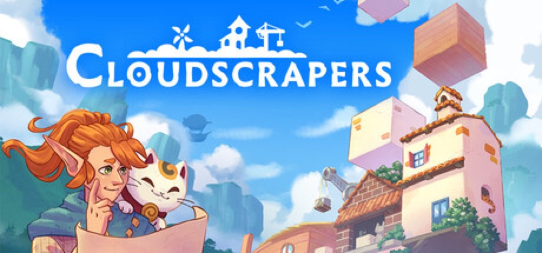
SEP 14 Cloudscrapers — OUT NOWThe two-person studio that shrank to survive has shipped the game the shrinking made possible. Nementic Games' Cloudscrapers, published by Curve Games, launched on Steam at 13:00 UTC on September 14 at $7.99, cut 25% to $5.99 until September 28, and it is a cozy strategy game about stacking a tower into the sky: wood, stone and nature blocks placed in rows that need three blocks to count, Tetris-shaped quests that pay out resources or coins when filled with a single material, biomes that bring their own hazards — lightning storms that wipe quests, poison clouds that shut whole rows — and a run that ends when the materials run out, sending you back to skill trees to make the next tower taller. There is a Story Mode with an elf guide, a cat, "ancient gods, mysterious artefacts," and a Challenge Mode for the score-chasers. Nementic was a four-person Munich studio doing commissioned work on other people's IP until the post-COVID contraction cut it to its two founders, Sebastian Jantschke and Julian, who met studying game design there; the 2023 restructure turned them toward small games, and this is the first, nearly two years in the making, grown from a jam idea and, the designer says, from watching clouds drift over a mountain peak on a hike. The soundtrack has vocals by Mariya Anastasova, the voice on Baldur's Gate 3's "Down by the River," and the store page underlines "hand-painted art and original music created by human artists." Windows only, ten languages including Japanese, Korean and Simplified Chinese, full controller support, Steam Deck Verified as of September 10. Curve has the game in launch bundles with Town to City, Drop Duchy, SUMMERHOUSE, Super Loco World, Cat Isle, Pile Up! and Stackmon. Twenty reviews on Tuesday morning, all positive; PixelForge Network gave it 88. Steam · Demo · Curve Games announcement · The Geekly Grind interview · PixelForge Network
-
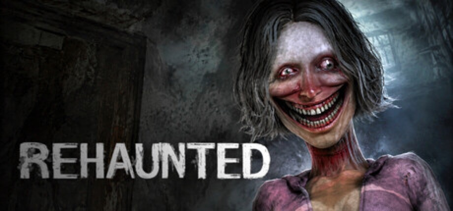
SEP 14 Rehaunted — OUT NOWA hundred thousand wishlists, a launch-day Mostly Negative, and two patches before bedtime. Rehaunted, from Cauchemar — a one-person studio, per HappyGamer, that writes its posts as "we" — launched on Steam on September 14 at $7.99, cut 10% to $7.19, and its own launch post could not quite believe the number: "We honestly never expected to be writing this, but Rehaunted is launching with nearly 100,000 wishlists. That number is absolutely unreal to us." Two days earlier the same feed had reported passing 50,000. The game is a first-person detective horror announced in July: Connor Raines arrives at a house where a young woman has been found dead, carrying a UV flashlight, a camera, a magnifying glass and a walkie-talkie, and the evidence — blood traces, fingerprints, hidden recordings — is designed to contradict itself and never be adjudicated, with the conclusions left to the player's evidence board and to dialogue choices over the radio with a second detective. Something in the house hunts you; photographing it blinds it. Two to three hours long, eleven languages, full controller support, Steam Deck "fully playable from beginning to end" at 30 to 40 fps on medium with FSR or XeSS and frame generation on, a recommended RTX 3070 on desktop. It opened, per HappyGamer, Mostly Negative on 21 reviews, and the reasons are in the reviews: radio conversations that start a timer but show no dialogue options, a radial menu that stops opening, hands clipping through walls, a crib that says interact and does nothing, a shader-compile screen stuck at 0%. The developer's answer came the same day, twice — Update 01 fixed the shader screen, moved haunting spawn points out of small rooms, let you run through the blinded entity and kept the tutorial on screen longer; Update 02 rebuilt the radio system entirely, dropping the Shift-based input for auto-appearing options, and shortened the hauntings. By Tuesday morning the score had climbed to Mixed, 39 of 75, and the positives are about what the negatives concede: "graphics are seriously impressive, almost AAA level, the story is really good and it's only $8." Windows only. Steam · Launch post and patches · HappyGamer · Tech Times on the announcement · GameSpace
-
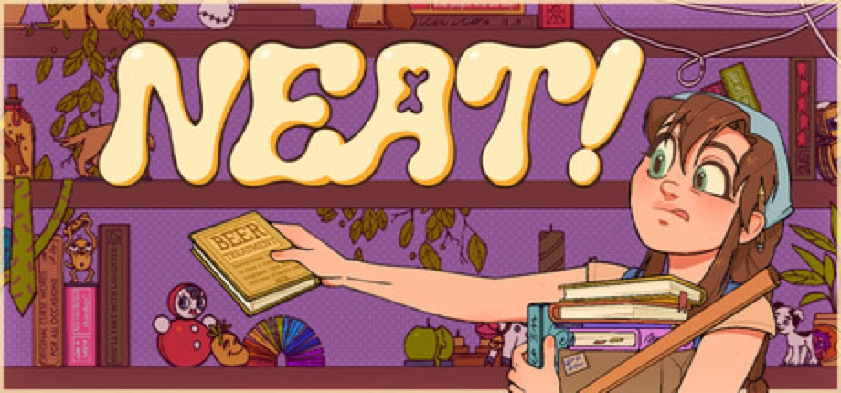
SEP 14 Neat! — OUT NOWThe other 100,000-wishlist debut of the day is an organizing game from Batumi. Korova Games' Neat!, published by Rogue Duck Interactive with Gamersky Games, launched on Steam on September 14 at $9.99 — up from the $7.99 in June's press release — cut 30% to $6.99 for the first week, and its launch post says that when the release date went up the game had just passed 25,000 wishlists; on launch day it crossed 100,000. You are Molly, founder of a small tidying service, and each of the eight hand-crafted isometric levels is a client's space — a Japanese convenience store, a Kowloon backyard, a single mother's kitchen, a streamer's desk, a grandmother's garden — to be sorted and arranged however feels right, with the client's story told only through what they own, and a quieter story between jobs "about Molly, her mom, and the things we keep putting off saying." The studio's pitch, from a playtester: "like if Unpacking and A Little to the Left had a baby in a stranger's kitchen." Roughly three and a half to four hours, twelve languages, Windows and macOS, Steam Deck Verified the day before launch, achievements and cloud saves. The Next Fest demo was Mixed, 29 of 42, and the full game is running ahead of it at Mostly Positive, 62 of 78, with the complaints consistent: placement is fiddly, small objects are hard to put down, eight levels is not many for the price, and several reviewers object to the recurring "Wizard Book" props whose covers they read as Harry Potter references. Two hotfixes shipped on day one, a reset-progress button among them. Steam · Demo · Launch post · June press release · Official site
-
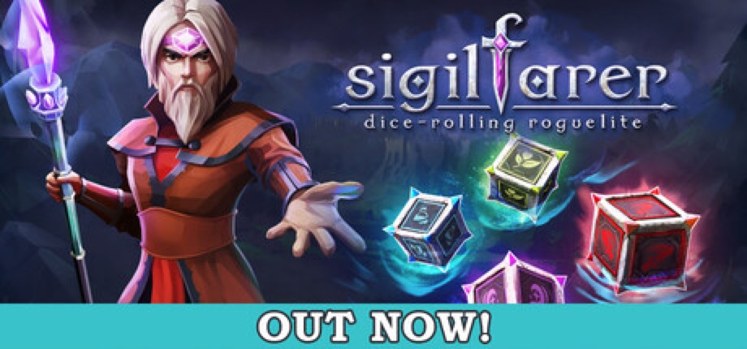
SEP 14 Sigilfarer: A Dice-Rolling Roguelite — OUT NOWMonday's roguelites came in three flavours, and the dice one is the Polish one. Viabo Games — a Polish studio founded in 2021 whose first release was the 2022 arcade maze game Blaze in Space: Beat a-Maze — launched Sigilfarer on Steam and the Epic Games Store at 12:00 UTC on September 14, published by Anshar Publishing, at $11.99 with a 20% launch cut to $9.59. It is a dice-building roguelite: every action rests on a roll, the dice themselves are what you build and upgrade, and the world is procedurally generated with routes to plan, resources to manage and luck to push, after a PAX West showing two weeks ago. Twenty-three languages, Windows only, mouse-only and no-timed-input options, HDR, achievements and cloud saves; Positive, 20 of 22, on the first day. The same day brought Terahard's Dunebound Tactics, published by indie.io at $14.99 cut to $11.99 — a turn-based tactical roguelite about a caravan crossing the sands in search of Haven, built on a resource called Elios that every crew member carries and that you can extract from the wounded instead of healing them, leaving a husk, with 15 classes, 16 traits, 50-plus modules and 38 enemy types, and six reviews, all positive — and Sage Boatman's solo-made RIG Riot, a third-person mech-shooter roguelike at $19.99 cut to $17.99, Positive at 38 of 42 and the only one of the three on Steam's popular-new-releases list by Tuesday morning, alongside Neat!. Steam · RPGamer · Anshar Publishing · Dunebound Tactics · COGconnected on Dunebound · RIG Riot
-
SEP 11 Anime Shop Simulator — OUT NOW
The week's other Steam chart-climber is a shop sim with a baseball bat. One More Time's Anime Shop Simulator, co-published with Polnoch, launched on September 11 at $14.99, cut 15% to $12.74, and by the evening was one of only two September 11 releases on Steam's popular-new-releases list, alongside The Loopler. It is the TCG Card Shop Simulator template — first-person, stock shelves, run the register, expand from one rack of T-shirts to rows of double metal shelving — with manga, figures, cosplay and collectible card packs as the stock, a TCG licence that unlocks pack-ripping as a second economy, and, the part every positive review mentions, four-player online co-op in which you scan customers for shoplifters and hit them with a bat. "Co op is just 4 idiots hitting each other with bats and ignoring the customers," reads one recommendation; "the ragdolls are perfect," reads another. Day one closed Mostly Positive, 76 of 104; by Tuesday morning it was 390 of 532, 73% on five times the reviews, and the negatives are specific: the game force-opens a feedback survey in your browser every time you quit, there are no graphics settings, a clothing editor that arrives after ninety minutes, launch bugs, and a day-one NSFW DLC that several reviewers flag as the tell for what kind of game it is. Windows only, 14 languages including Japanese, Korean and Simplified Chinese, achievements. Steam · Steam popular new releases · Deku Deals
-
 SEP 11 The Loopler — OUT NOW
SEP 11 The Loopler — OUT NOWA slot car, a figure-eight, and a number that goes up. Solo developer Mheep's The Loopler, co-published with Zero Percent, launched on Steam on September 11 after slipping from a Q1 window, and it is the idle-roguelite-deckbuilder hybrid in its purest form: a car drives a looping track on its own, every lap scores points toward a round target, and your job is to pick cards, place gates on the track — 14-plus of them, each a synergy trigger — and collect charms so the loops pay out more, then spend the gold on permanent upgrades between runs. Four-plus cars with their own effects, five-plus tracks, 30-plus upgrades, five difficulty modes, achievements and daily leaderboards; the store page's own pitch is "settle into the loop as numbers go up and dopamine fills your brain," which is at least honest about the genre. The demo went up on February 16 on both Steam and itch.io and sits at Very Positive, 303 of 332 — a big number for a solo project. Windows, macOS and Linux, 12 languages, full controller support plus mouse-only and touch-only options, Steam leaderboards and cloud saves. The price the page was missing on launch morning turned out to be $9.99, cut 10% to $8.99 for launch, and four days in the full game is tracking the demo: Very Positive, 211 of 230. Steam · Demo · Demo on itch.io · Games Press announcement
-
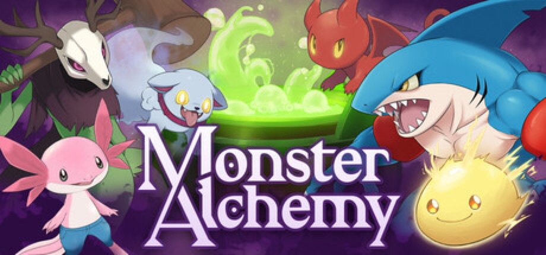
SEP 10 Monster Alchemy — EARLY ACCESSThe monster-taming RPG where you never catch anything. Team Metacarpo's Monster Alchemy, co-published with Vsoo Games, went into Steam Early Access on September 10 at $18.99, cut 15% to $16.14 for launch, and its one-line pitch is "DON'T CATCH, CREATE": monsters are synthesised from gathered ingredients and recipes, then put to work — mining ore, chopping wood, brewing potions — until they level up their gathering skills or get fused, two at a time, into new species. Combat is turn-based with an elemental type system; the base is an Alchemist Tower you build rooms onto; the world is a hand-drawn 2.5D one that reviewers keep comparing to old Zelda and to the Game Boy Dragon Quest Monsters. The studio's launch post says the game reached 25,000 wishlists after a June Steam Next Fest showing, and the demo — 47 of 51 positive — carries 100% of its progress into the full game. What Early Access has: over 100 creatures to make and more than 150 to discover, about half of the world map with its towns and side quests, and the tower-building. What the Early Access FAQ promises: at least a year, a possible price rise, and a roadmap posted on September 11 in four phases of roughly three months each — a Forge room for crafting equipment, monster search filters and control rebinding, a quest-tab overhaul and two new zones with a city and a Coliseum in phase one; tech-based summoning, Energy-type monsters and three branching-path zones in phase two; a Skill Trainer, tier-three fusions and two more coliseums in phase three. Reception five days in is Very Positive, 56 of 60, with the caveats already agreed on: "it lacks a proper tutorial," the world "does feel quite empty" between settlements, and the music repeats. Windows only; English, Spanish, and Simplified and Traditional Chinese; partial controller support, save-anytime, keyboard-only option, achievements, Steam Cloud. A small fix went out the day after launch. Steam · Demo · Early Access launch post · Community hub and roadmap · DeVuego
-
SEP 10 The Crust — 1.0 LAUNCH
Twenty-six months after it entered Early Access, the lunar factory game is finished. VEOM Studio's The Crust, published by Crytivo, left Early Access on September 10 — 1.0 on Steam and the Epic Games Store, $31.99 with a 35% launch cut to $20.79 — after a Kickstarter in March 2024 that doubled its $100,000 goal and an Early Access launch that July. The game is an automation colony builder on the Moon: mine regolith, run conveyor-and-drone production lines above and below the surface, manage colonists' health, skills and morale, fill Earth contracts and trade with rival factions, with a fully voiced story campaign the studio says takes around 30 hours and has multiple endings. What 1.0 adds is the list Early Access players had been asking for: the complete campaign and a redesigned prologue; Planning Mode, for laying out production networks and conveyor belts before spending anything on them; Sandbox 2.0 with selectable start points on the lunar map, seeds and terrain maps; truck roads, training centres, flexible wages, the ability to fire workers and dismantle outposts; global events — solar flares, meteor showers, epidemics — and an anti-meteor gun; a rewritten logistics layer that reviewers report tripled their frame rates ("on my 3060, it's now running at 60+ fps where it used to be 25"); and showers and toilets, which one 22-hour review calls "the real 1.0 feature." macOS support arrived with the update, and GamingOnLinux lists a native Linux build, though the Steam page shows only Windows and macOS as of this morning; Steam Deck is rated Playable. Lifetime reception is Mostly Positive, 3,058 of 3,990, and the negatives that remain are about quality-of-life gaps a 1.0 label invites scrutiny of. 13 languages, English and Russian with full voice. Steam · GamingOnLinux · Games Press release · Aroged on the 1.0 changes
-
 SEP 10 Shroom and Gloom — EARLY ACCESS
SEP 10 Shroom and Gloom — EARLY ACCESSThe most-wishlisted indie of the week is a deckbuilder where every enemy is edible. Team Lazerbeam's Shroom and Gloom, published by Devolver Digital, went into Steam Early Access on September 10 at $14.99 — no launch discount, and the studio says the price will not change at 1.0. It is a first-person dungeon crawl run by two decks: an Explore deck to reveal, search, break, unlock and ignite your way through hand-drawn caves, and a Combat deck to hack, roast and eat the fungal monstrosities that live in them, with cooking as the healing system — skewer and season a dead enemy to restore health, or drop it in a pot for a run-altering soup. Cards can be grown and modified without a ceiling, which is where the promised "mega-combos" come from. The Cape Town studio started it as a 7-day FPS jam prototype in 2021, put a free prototype on itch.io in September 2024 — still there, rated 4.8 stars from 324 ratings — and the Steam demo that followed is now Overwhelmingly Positive at 1,102 of 1,138 reviews, past 100,000 downloads, with the game itself over 200,000 wishlists. What ships now: two pathways with distinct characters and about 300 cards each, plus quests, synergies and unlocks; the plan for a 12-to-24-month Early Access is a third pathway, new character classes and more quests. Launch-day reception was Very Positive at 100 of 108; five days in it is 693 of 763, 91%. Windows and macOS, English and Simplified Chinese only, 14 achievements. Steam · Prototype on itch.io · Gematsu · gamer.org on the demo
-
 SEP 10 Forsworn — OUT NOW
SEP 10 Forsworn — OUT NOWForsworn is the Divinity: Original Sin combat system with everything else cut away, and it took one developer three years. Resummon Studios' Dat Le says he started it as a hobby project because he "couldn't find similar games that focused purely on this kind of combat" — gridless movement, an action-point economy — and it launched on Steam on September 10 at $15.99, cut 20% to $12.79 for launch. The shape is a turn-based tactics roguelite: six heroes with three subclasses each, more than 150 items and 200 abilities to stack into a party that can, per the store page, "slay gods," with Soul Shards carried out of each defeat to make the next run stronger. There are two modes, a Roguelike Adventure and an Endless Arena, five difficulties layering enemy modifiers and map-wide trials, and online co-op for three, where everyone takes their turn at the same time so the fights stay brisk. Windows and Linux, Steam Deck Playable, ten languages including Japanese, Korean and Simplified Chinese, full controller support. It opened with six Steam reviews, all positive, against a demo at 38 of 45; five days in it is Very Positive, 139 of 147. Steam · Demo · Games Press release · GamingOnLinux · RPGamer
-
 SEP 10 Welcome to Elderfield — OUT NOW
SEP 10 Welcome to Elderfield — OUT NOWThe farming sim where the crops include teeth and eyeballs launched on Steam on September 10. Chris Cote's Welcome to Elderfield, published by Kwalee, is a cozy horror RPG in the Stardew shape — plant, water, fish, mine, cook, decorate the house, befriend or marry the townsfolk — set in a town where eldritch beings watch over you, the local news gets stranger by the day, and the things from the woods sometimes wander onto the farm. The art is hand-drawn and horror-manga inspired, the soundtrack is dark lo-fi from the composer Dated, the combat is turn-based and item-driven, and the first dungeon is the local mall. There is a "cozy" difficulty for people who want the harvest without the suffering, and the store page's own feature list ends with "die in your sleep." The reason to pay attention is the demo, which has been up for months and sits at Overwhelmingly Positive — 618 of 649 reviews, 95% — which for a one-developer project is the kind of number publishers sign on the strength of. Windows only, seven languages including Simplified Chinese and Brazilian Portuguese, full controller support, achievements, Steam Cloud. $17.99, cut 10% to $16.19 for launch. The first day's reviews were unanimous, 143 of 143 positive; five days in it is Very Positive, 1,027 of 1,112, and past a thousand reviews. Steam · Demo · Bloody Disgusting · Tech Times on the demo
-
 SEP 10 Dumb Ways to Build — OUT NOW
SEP 10 Dumb Ways to Build — OUT NOWThe Melbourne train-safety campaign that became a mobile franchise now has a Steam co-op game. Dumb Ways to Build, developed and published by the Dumb Ways to Die team, went live on September 10 on Steam, PlayStation 5 and Xbox Series X|S, with cross-platform play across all three, at $7.99. It is a physics-based builder in the Human Fall Flat line: up to four players are hired by "Dumbville's least reputable construction company," grab and throw anything not bolted down, nail-gun together sketchy bridges, ramps and platforms, and try to finish the job before the job finishes them. The store page's pitch is honest about where the fun is meant to come from — "your co-workers are the real occupational hazard," the sledgehammer works on steel beams and on friends — and there is a solo mode for people without friends to launch off a roof. Fifteen languages, including Japanese, Korean, both Chinese scripts, Turkish and Ukrainian; full controller support; achievements. The under-$8 price is the bet: a brand most people know from a song, at the cost of a lunch, in the same week as Valheim 1.0. Day-one reception was Mostly Positive, 29 of 38; five days in it has climbed to Very Positive, 127 of 148. Steam · Official page · GamingOnLinux · Tech Times
-
 SEP 10 Hazard Pay — OUT NOW
SEP 10 Hazard Pay — OUT NOWA Sokoban where the boxes are evidence. Smitner Studio's Hazard Pay, co-published with Numskull Games, launched September 10 on Steam, PlayStation 5 and Nintendo Switch, and its pitch is delivered in the voice of the employer: "Take the money, do the job, don't ask questions." It is 1982, a Cold War research facility has had a containment breach, and you are the contractor sent in to mop the floors, collect the scattered documents, push the ███████ into the chemical barrels and leave nothing behind, not even footsteps — with the failed experiments, PRS-86 and something called The Collector, still loose in the halls. Each site is a compact block-pushing puzzle with moving parts; every move is counted and your final step count goes on a global leaderboard, so the game is playable at your own pace and then replayable against everyone else's. There are narrative choices and multiple endings about how much truth gets hidden. Windows, macOS and Linux; eight languages including Japanese and both Chinese scripts; full controller support; achievements; no timed input required. $16.99, cut 20% to $13.59 for launch; five days in, all 24 Steam reviews are positive. Steam · Demo · Gematsu · Numskull Games
-
 SEP 9 Valheim — 1.0 LAUNCH
SEP 9 Valheim — 1.0 LAUNCHFive years, seven months and seven days after five people in Skövde put a Viking survival game into Early Access, Iron Gate is calling it finished. Valheim 1.0 went live on September 9 at 6 a.m. Pacific, 3 p.m. in Central Europe, as a free update for everyone who owns it — and at 17 million copies sold, that is a lot of everyone. The headline is the Deep North, the frozen final biome the roadmap has promised since 2021: giant Gammeltrolls that petrify into stone when killed ("the trolls from the beginning of the game, but much older," senior artist Lisa Kolfjord told GamesBeat), two new dungeons in the Winding Tunnels and the Gates of Mörkhalla, seals, a rideable moose, new armour sets, a blood-thunder sword, a frost axe and mage weapons, plus an unlimited-use grappling hook for the vertical terrain. Existing worlds and characters carry over, with the caveat that the new biome only generates in areas you have not already explored. The launch also puts the game on PlayStation 5 and Nintendo Switch 2 for the first time alongside PC, Mac, Linux and Xbox, with full crossplay across all of them. Two numbers to note. The team is eight people now, up from five, and the price rises from $19.99 to $29.99 with 1.0 — Steam is already showing the new figure — the studio's rationale being that a complete game is not an Early Access one. The download is around 4.3 GB. Steam reception six days after launch: Very Positive, 94% of 548,150 reviews, and IGN's 10/10 has it at 90 on Metacritic. Coffee Stain publishes. Steam · Iron Gate announcement · GamesBeat interview · Game Rant on launch times
-
 SEP 9 Sunset Summit — OUT NOW
SEP 9 Sunset Summit — OUT NOWThe brothers who made DEVOUR, a co-op horror game that went on to sell more than seven million copies, have made a co-op game about old people climbing mountains, and its entire design is a rebuttal to the rage-climber genre it borrows from. Joe and Andrew Fender's Sunset Summit, published by Future Friends Games, launched on Steam on September 9 after slipping from an August 21 date. Up to eight players take a group hike up floating sky islands and try to reach the top before sunset, with ice axes for the climbing, ropes and item-delivery drones for helping stragglers, and pogo sticks, booster pills and umbrellas for when sensible tools run out. The store page's first heading is "Fun over frustration": checkpoints are frequent, a fall respawns you instantly, and the pitch is that you climb, fall and try again rather than lose forty minutes of progress. There are 16 handcrafted routes across four islands at roughly an hour each, harder difficulties on top, proximity chat and walkie-talkies to keep the group in contact, offline solo play, a realistic in-game camera to stop and take photographs with, and a "100% handcrafted, no AI" line covering every asset, route, character and piece of music. Windows only, 12 languages, full controller support. A demo has been up since June. The price turned out to be the surprise: $4.99, cut 38% to $3.09 for launch, for an eight-player co-op game from a studio that sold seven million copies of its last one. Reception six days in is Very Positive, 51 of 61 reviews. Steam · Demo · GameGrin on the original date · Game-News on the delay
Release list sources: Green Man Gaming — Indie Game Release Round-Up, September 2026, GameGrin — Top 36 New Steam Games This Week (14th–20th of September 2026), GameGrin — 28 Hidden Gems Launching on Steam This Week (14th–20th of September 2026), GameGrin — 22 Hidden Gems Launching on Steam This Week (7th–13th of September 2026), RPGamer — New Release Round-Up (September 10, 2026), GamingOnLinux — daily indie coverage, Steam — new releases by date, plus per-entry Steam / press links above. Game artwork: official Steam store assets, press kits and site key art, © their respective developers and publishers.
> ABOUT
CyberCycho is a curated digest of itch.io.